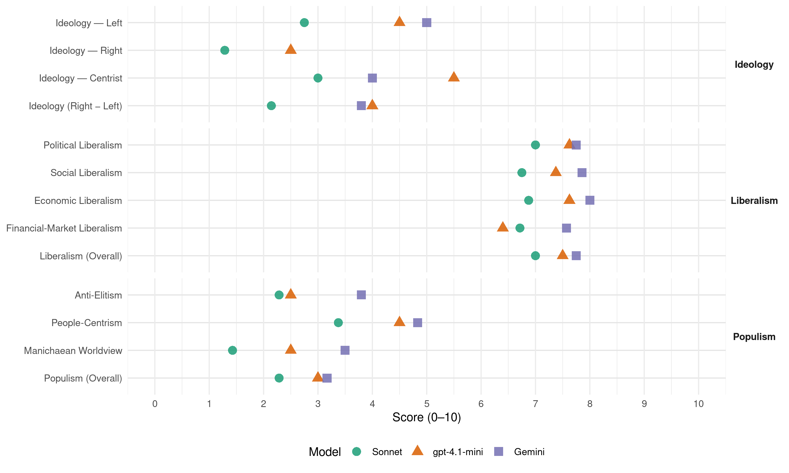

PUSC (Costa Rica, 1998)
manifesto_id 153521_199802
Get full text: This site shows derived annotations and short verbatim quotes only. The full manifesto text is © Manifesto Project / WZB — obtain it via manifesto-project.wzb.eu using the manifesto_id above.
Headline scores
| Dimension | Sonnet | gpt-4.1-mini | Gemini |
|---|---|---|---|
| Populism (Overall) | 2.3 | 3.0 | 3.2 |
| Anti-Elitism | 2.3 | 2.5 | 3.8 |
| People-Centrism | 3.4 | 4.5 | 4.8 |
| Manichaean Worldview | 1.4 | 2.5 | 3.5 |
| Ideology (Right − Left) | 2.1 | 4.0 | 3.8 |
| Liberalism (Overall) | 7.0 | 7.5 | 7.8 |
| Political Liberalism | 7.0 | 7.6 | 7.8 |
| Social Liberalism | 6.8 | 7.4 | 7.9 |
| Economic Liberalism | 6.9 | 7.6 | 8.0 |
| Financial-Market Liberalism | 6.7 | 6.4 | 7.6 |
Evidence per dimension
Economic Liberalism
Gemini · score 7.0 · verified · chunk 1
“Aceptamos la Economia Social de Mercado”
toma y ejecucion de las decisiones . Aceptamos la Economia Social de Mercado como el mejor instrumento
Gemini · score 7.0 · verified · chunk 2
“participacion de la empresa privada”
vincular la Educacion Academica con la capacitacion laboral, para mejorar, en lo posible, el desempeño de jovenes y adultos en sus trahajos. Promover con la participacion de la empresa privada, actividades de propaganda
Gemini · score 7.0 · verified · chunk 3
“promoveremos la creacion y el fortalecimiento de empresas municipales de servicios publicos, las cuales contacin Ia supervision de AyA”
En el marco de operacion que permite el Triangulo de Solidaridad, promoveremos la creacion y el fortalecimiento de empresas municipales de servicios publicos, las cuales contacin Ia supervision de AyA, así como con el apoyo tecnico y financiero necesarios para su buen desempeno.
Gemini · score 8.0 · verified · chunk 4
“respeto a las reglas del mercado”
compromiso con los equilibrios macroeconomicos y el respeto a las reglas del mercado. COMPROMISO CON UN COSTO
Gemini · score 8.0 · verified · chunk 5
“libre competencia entre las empresas”
Estimularemos tambien Ia modernizacion de Ia infraestructura, el buen funcionamiento de los mercados, Ia eliminacion de distorsiones, Ia libre competencia entre las empresas, servicios publicos internacionalmente competitivos
Gemini · score 9.0 · verified · chunk 6
“apertura gradual del mercado de telecomunicaciones”
El fortalecimiento del ICE y Ia apertura gradual del mercado de telecomunicaciones Respecto al Instituto
Gemini · score 9.0 · verified · chunk 7
“Ley Antimonopolios e Inversion”
marco de accion por medio de una Ley Antimonopolios e Inversion a nivel Centroamericano
Gemini · score 9.0 · verified · chunk 8
“creemos firmemente en la apertura comercial”
En el PUSC creemos firmemente en la apertura comercial como via de desarrollo. Pero la apertura comercial
gpt-4.1-mini · score 7.0 · verified · chunk 1
“Aceptamos la Economia Social de Mercado como el mejor instrumento para promover el desarrollo economico con justicia social”
Aceptamos la Economia Social de Mercado como el mejor instrumento para promover el desarrollo economico con justicia social y equidad . Impulsamos la condicion y la participacion activa de las mujeres en la vida politica, en las instituciones y los órganos de poder y en todas las actividades economicas, sociales y culturales .
gpt-4.1-mini · score 8.0 · verified · chunk 2
“promover la creación de opciones de trabajo de tiempo parcial a mujeres”
Dar prioridad de acceso a las mujeres en condicion de desventaja social, a los servicios que prestara el Programa Capacitacion para un Trabajo Digno, descrito en el apartado “Trabajo”. Promover la creacion de opciones de trabajo de tiempo parcial a mujeres que por situaciones especiales, no pueden trabajar una jornada completa.
gpt-4.1-mini · score 7.0 · verified · chunk 3
“mercado, competencia, empresa, impuestos, regulación, privatización, comercio”
…la política de modernización industrial, que continuará impulsando la reconversión tecnológica del sector manufacturero, la penetración en mercados internacionales y la ampliación de la demanda interna, en el marco de acuerdos sectoriales de competitividad. La promoción y fortalecimiento de las empresas autogestionarias (Micro y pequeñas empresas). El rescate de la actividad turística que genera empleo en todos los niveles socioeconómicos y de amplia cobertura regional y con oportunidades para micro empresas. Los nuevos sectores como microelectrónica y programación informática. Mercado, competencia, empresa, impuestos, regulación, privatización, comercio…
gpt-4.1-mini · score 7.0 · verified · chunk 4
“promoveremos la adopción de un arancel menor y neutral”
…Continuaremos con la eliminación de barreras no arancelarias; promoveremos la adopción de un arancel menor y neutral y orientaremos la acción de los entes promotores de inversion para que desarrollen su labor directamente con el sector privado…
gpt-4.1-mini · score 8.0 · verified · chunk 5
“liberalizaremos la producción de semillas a nivel nacional”
Liberalizaremos la producción de semillas a nivel nacional con el propósito de estimular la inversion e investigación privada. La Oficina Nacional de Semillas se limitara a certificar los materiales producidos y a reglamentar la importación en consulta directa con las asociaciones y camaras de productores.
gpt-4.1-mini · score 8.0 · verified · chunk 6
“promover Ia desrregulacion de Ia actividad economica, para reducir los costos que afectan Ia competitividad”
…Avanzar en el campo de Ia desrregulacion de Ia actividad economica, para reducir los costos que afectan Ia competitividad, especialmente a las empresas de menor tamaño.
gpt-4.1-mini · score 8.0 · verified · chunk 7
“libre entrada y salida de capitales del pais”
Igualmente se han hecho esfuerzos por establecer las leyes y reglas necesarias para que se de mayor solidez y estabilidad en el sistema mediante un enfoque de supervision preventiva. En los ultimos anos se permite la libre entrada y salida de capitales del pais y la politica cambiaria es flexible.
gpt-4.1-mini · score 8.0 · verified · chunk 8
“modelo de desarrollo basado en las exportaciones y la atraccion de la inversion internacional”
…Desde la anterior decada, nuestro pais opto por un acertado modelo de desarrollo basado en las exportaciones y la atraccion de la inversion internacional. Gradualmente, hemos logrado abrir nuestro mercado e incorporamos ala economia mundial. En el PUSC creemos firmemente en la apertura comercial como via de desarrollo…
Sonnet · score 6.0 · verified · chunk 1
“apertura comercial, la competitividad internacional”
El modelo económico de apertura comercial, la competitividad internacional, el crecimiento demografico y la creciente migración hacia la ciudad, plantean con urgencia la necesidad de generar condiciones para el crecimiento productivo
Sonnet · score 6.0 · verified · chunk 2
“empresa privada y los centros de capacitación”
Promover el Programa de Educación Dual para estimular una intima relación entre la empresa privada y los centros de capacitación profesional del Estado
Sonnet · score 6.0 · verified · chunk 3
“participacion del sector privado”
todo ello con la mas amplia participación del sector privado y de los gobiernos locales. Para lograr nuestras metas, es necesario la reestructuración de las instituciones del sector
Sonnet · score 7.0 · verified · chunk 4
“apertura inteligente”
propiciaremos una apertura inteligente, la cual ira acompañada del desarrollo institucional necesario para salvaguardar los intereses nacionales
Sonnet · score 7.0 · verified · chunk 5
“libre competencia entre las empresas”
el buen funcionamiento de los mercados, Ia eliminacion de distorsiones, Ia libre competencia entre las empresas, servicios publicos internacionalmente competitivos
Sonnet · score 8.0 · verified · chunk 6
“libre comercio entre los países hermanos”
La venta de productos derivados del petroleo a los otros países de Ia region, promovera Ia integracion economica y ellibre comercio entre los países hermanos
Sonnet · score 8.0 · verified · chunk 7
“Eliminar los impuestos especificos a las exportaciones”
Simplificar la estructura tributaria para lograr un numero de impuestos manejable. Eliminar los impuestos especificos a las exportaciones.
Sonnet · score 7.0 · verified · chunk 8
“apertura comercial como via de desarrollo”
En el PUSC creemos firmemente en la apertura comercial como via de desarrollo. Pero la apertura comercial no consiste simplemente en la decision de abrir nuestras fronteras…
Financial-Market Liberalism
Gemini · score 6.0 · verified · chunk 1
“facilitar el acceso a la tecnologfa y al credito”
tecnologica. Tambien tenemos estrategias para facilitar el acceso a la tecnologfa y al credito, especialmente de
Gemini · score 7.0 · verified · chunk 3
“Restituir el redescuento hipotecario, fortalecer el mercado secundario de hipotecas”
Tomar las medidas necesarias para desarrollar al interno del SFNV, mayor capacidad de participar y penetrar efectivamente en el mercado financiero interno y externo Restituir el redescuento hipotecario, fortalecer el mercado secundario de hipotecas y .reducir los gastos de formalizacion de las operaciones de credito hipotecario.
Gemini · score 8.0 · verified · chunk 4
“garantizar la modernizacion del sector financiero”
reformas iniciadas para garantizar la modernizacion del sector financiero De esta forma lograremos disminuir el costo del credito
Gemini · score 8.0 · verified · chunk 5
“fortalecer el mercado de capitales”
nos comprometemos a impulsar Ia creacion de Fondos de Capital de Riesgo para las empresas de base tecnologica; estimular Ia utilizacion de nuevas lfneas de financiamiento y fortalecer el mercado de capitales mediante legislacion adecuada.
Gemini · score 8.0 · verified · chunk 6
“libre entrada y salida de capitales”
reformas en el Sistema Cambiario, pues ya se permite Ia libre entrada y salida de capitales del pais y Ia
Gemini · score 9.0 · verified · chunk 7
“libre entrada y salida de capitales”
ya se permite Ia libre entrada y salida de capitales del pais y Ia
Gemini · score 7.0 · verified · chunk 8
“control y supervision a nivel bancario y financiero”
es ciaro que Ia debilidad de los mecanismos de control y supervision a nivel bancario y financiero, facilitan el lavado de dinero
gpt-4.1-mini · score 6.0 · verified · chunk 3
“crédito, financiamiento, fondos, ahorro, mercado financiero, inversiones”
…restituir el redescuento hipotecario, fortalecer el mercado secundario de hipotecas y reducir los gastos de formalización de las operaciones de crédito hipotecario. Negociar líneas de crédito externo para vivienda de clase media. Abrir las normas de concesión de créditos a efecto de que los intermediarios financieros ofrezcan libremente opciones de largo plazo para cancelar las hipotecas. Adecuar la Ley de Propiedad Horizontal para ajustarla a la situación actual y se convierta en un medio que estimule el surgimiento de nuevas opciones para resolver el problema habitacional. Crédito, financiamiento, fondos, ahorro, mercado financiero, inversiones…
gpt-4.1-mini · score 6.0 · verified · chunk 4
“fortaleceremos el desarrollo de los fondos de pensiones privados”
…Tambien promoveremos Ia apertura del mercado de seguros y fortaleceremos el desarrollo de los fondos de pensiones privados. SECTOR AMBIENTAL El desarrollo sostenible debe verse como un proceso de cambios progresivos para mejorar Ia vida…
gpt-4.1-mini · score 6.0 · verified · chunk 5
“ley organica del lCAFE para abrir al productor adicionalmente al sistema actual de comercializacion”
Revisaremos Ia ley organica del lCAFE para abrir al productor adicionalmente al sistema actual de comercializacion, Ia posibilidad de tomar sus propias decisiones comerciales y definir sus esquemas de inversion, conociendo con anticipacion el precio de venta a futuro de su cosecha.
gpt-4.1-mini · score 7.0 · verified · chunk 6
“la Superintendencia General de Entidades Financieras, tiene necesidades importantes de recursos humanos y materiales para llevar adecuadamente su tarea”
…las reformas en el Sistema Financiero, son todavia incipientes y Ia institucion que las ejecuta (Superintendencia General de Entidades Financieras) , tiene necesidades importantes de recursos humanos y materiales para llevar adecuadamente su tarea.
gpt-4.1-mini · score 7.0 · verified · chunk 7
“mejorar el marco de regulacion y supervision”
Los socialcristianos estamos convencidos de la necesidad de mejorar el marco de regulacion y supervision de los distintos instrumentos financieros con el fin de mejorar la calidad de la supervision a cargo de la Comision Nacional de Valores y promover la autorregulacion del mercado a traves de las bolsas de valores.
Sonnet · score 5.0 · verified · chunk 1
“garantizar creditos, y atraer la inversion”
el PARTIDO UNIDAD SociAL CrusTIANA hara sus mejores esfuerzos para estabilizar la economia; abrir nuevos nichos de insercion en el mercado internacional; mejorar la infraestructura publica; garantizar creditos, y atraer la inversion.
Sonnet · score 6.0 · verified · chunk 3
“mercado secundario de hipotecas”
Restituir el redescuento hipotecario, fortalecer el mercado secundario de hipotecas y reducir los gastos de formalizacion de las operaciones de credito hipotecario.
Sonnet · score 7.0 · verified · chunk 4
“apertura del mercado de seguros”
Tambien promoveremos Ia apertura del mercado de seguros y fortaleceremos el desarrollo de los fondos de pensiones privados
Sonnet · score 7.0 · verified · chunk 5
“fortalecer el mercado de capitales”
impulsar Ia creacion de Fondos de Capital de Riesgo para las empresas de base tecnologica; estimular Ia utilizacion de nuevas lfneas de financiamiento y fortalecer el mercado de capitales mediante legislacion adecuada
Sonnet · score 8.0 · verified · chunk 6
“Eliminar todas las regulaciones financieras de caracter represivo”
Eliminar todas las regulaciones financieras de caracter represivo que todavfa persisten, es decir, todas las que encarezcan el proceso de intermediacion financiera
Sonnet · score 8.0 · verified · chunk 7
“reduciendo las barreras de entrada vigentes para los intermediarios extranjeros”
Los socialcristianos creemos necesario continuar este proceso, reduciendo las barreras de entrada vigentes para los intermediarios extranjeros y mejorando el flujo de informacion
Sonnet · score 6.0 · verified · chunk 8
“debilidad de los mecanismos de control a nivel bancario”
es ciaro que Ia debilidad de los mecanismos de control y supervision a nivel bancario y financiero, facilitan el lavado de dinero en el país.
Political Liberalism
Gemini · score 8.0 · verified · chunk 1
“participación democrática el principal componente”
hemos inspirado para hacer de la participación democrática el principal componente de las soluciones propuestas
Gemini · score 8.0 · verified · chunk 2
“fortalecimiento de la democracia participativa”
como garantia de un futuro de justicia, paz y armonia solidarias, en aras del fortalecimiento de la democracia participativa. Fomentar y armonizar
Gemini · score 7.0 · verified · chunk 3
“respetando el principia de legalidad presupuestaria y de reserva de ley.”
Abrir espacios de negociacion colectiva en el Sector Publico que promuevan Ia participacion de los funcionarios en Ia definicion de sus condiciones de empleo sin afectar Ia necesaria eficiencia de las instituciones y respetando el principia de legalidad presupuestaria y de reserva de ley.
Gemini · score 8.0 · verified · chunk 4
“garantizar la transparencia y el sano”
necesario para garantizar la transparencia y el sano y eficiente manejo de los fondos
Gemini · score 7.0 · verified · chunk 5
“brindara Ia seguridad jurídica y reglas claras”
se paguen en el tiempo a traves de una tasa por el servicio de Ia obra. El Estado com parte el riesgo con los inversionistas a quienes se les brindara Ia seguridad jurídica y reglas claras para que asuman este reto.
Gemini · score 8.0 · verified · chunk 6
“garantizar la transparencia en las contrataciones”
supervision de los procesos de adjudicacion para garantizar la transparencia en las contrataciones. El futuro gobierno
Gemini · score 8.0 · verified · chunk 7
“promocion de la democracia participativa”
desarrollo humano, es la promocion de la democracia participativa. Consiste en abrir
Gemini · score 8.0 · verified · chunk 8
“independencia, Ia cual siempre respetaremos”
respeto hacia el Poder Judicial y con plena conciencia de su independencia, Ia cual siempre respetaremos.
gpt-4.1-mini · score 8.0 · verified · chunk 1
“promover la participación democrática el principal componente de las soluciones”
En él nos hemos inspirado para hacer de la participación democrática el principal componente de las soluciones propuestas en el presente texto. Esa participación es, ante todo, un acto de fe en la capacidad creadora y en la libertad responsable de cada persona.
gpt-4.1-mini · score 8.0 · verified · chunk 2
“garantizar el acceso de madres de familia en situación de marginalidad”
Garantizar el acceso de padres de familia en situación de marginalidad, al Programa Nacional de Capacitación para el Trabajo Digno, descrito en el tema “Trabajo”.
gpt-4.1-mini · score 8.0 · verified · chunk 3
“la democracia, los derechos, elecciones, cortes, medios, gobierno, parlamento”
…un sistema de información en salud. En cuanto a la regulación, buscamos establecer y promover la adopción de normas, estándares, patrones y registros para el logro de calidad en la atención; control de gastos, inversiones y costos en salud, así como el seguimiento en los procesos de obtención y utilización de equipo y materiales. El Ministerio también ejercerá funciones de vigilancia sobre la situación de la salud, en todos los niveles, a escala nacional, así como la vigilancia epidemiológica total, la investigación, evaluación y retroalimentación de las políticas. Respecto a la investigación y el desarrollo tecnológico, la Rectoría permitirá establecer políticas y estrategias; definir las prioridades nacionales en ese ámbito; formular y supervisar las normas y procedimientos administrativos; promover el avance de la investigación y la aplicación práctica de nuevas tecnologías en salud; promover el establecimiento de laboratorios de calidad así como el desarrollo de recursos humanos. Esta propuesta implica también la reestructuración de la CCSS. En un contexto de cambio gradual, buscamos que esta institución adecue su modelo de atención, así como sus recursos financieros a los procesos de modernización señalados. La democracia, los derechos, elecciones, cortes, medios, gobierno, parlamento…
gpt-4.1-mini · score 7.0 · verified · chunk 4
“promoveremos Ia aprobacion del Codigo de Ia Nñiez y Ia Adolescencia”
…A nivel legislativo, promoveremos Ia aprobacion del Codigo de Ia Nñiez y Ia Adolescencia, así como una reforma al Código Municipal, con el propósito de incorporar acciones que favorezcan toda acción proactiva en torno a Ia personajoven…
gpt-4.1-mini · score 7.0 · verified · chunk 5
“la democracia y la estabilidad política y social”
Costa Rica tiene Ia capacidad de desarrollarse sosteniblemente porque cue,nta con los recursos necesarios para hacerlo. EI pais tiene una extraordinaria riqueza natural y humana unida a una estabilidad política y social, sus niveles de educacion y salud facultan un desarrollo en armonfa con Ia naturaleza.
gpt-4.1-mini · score 7.0 · verified · chunk 6
“la Autoridad Reguladora de los Servicios Publicos, ARESEP”
…la Autoridad Reguladora de los Servicios Publicos, ARESEP, entidad que, por iniciativa del Dr. Miguel Angel Rodriguez, nacio como transformacion de lo que fue el Servicio Nacional de Electricidad, SNE. entre otras funciones, el ARESEP aprueba todas las tarifas de electricidad y supervisa Ia calidad de servicio.
gpt-4.1-mini · score 8.0 · verified · chunk 7
“promover la democracia participativa”
El Partido Unidad Social Cristiana se propone entrar de lleno al Siglo XXI con un modelo de Estado que situe a la persona humana en el centro del quehacer institucional. Un Estado para la gente y con la gente. Los socialcristianos consideramos que el factor clave, esencial y estratégico para reemprender con renovado vigor el camino del desarrollo humano, es la promocion de la democracia participativa.
gpt-4.1-mini · score 8.0 · verified · chunk 8
“la vivencia democratica y civilista y Ia realizacion y defensa de los derechos humanos”
…instituciones cuyos fundamentos sean Ia vivencia democratica y civilista y Ia realizacion y defensa de los derechos humanos. Costa Rica se encuentra en una posicion envidiable como ejemplo en materia de derechos humanos. Desde la creacion de la ONU y de Ia OEA, nuestro país ha estado al frente del movimiento…
Sonnet · score 8.0 · verified · chunk 1
“Preservar y perfeccionar el sistema democrático”
Costa Rica se enfrenta hoy a grandes desafíos: Preservar y perfeccionar el sistema democrático; mejorar el nivel y la calidad de vida de toda la población
Sonnet · score 7.0 · verified · chunk 2
“fortalecer la democracia participativa”
propicie la equidad entre los géneros como parte sustantiva del accionar del Estado y como garantia de un futuro de justicia, paz y armonia solidarias, en aras del fortalecimiento de la democracia participativa
Sonnet · score 6.0 · verified · chunk 3
“libertad de asociación sindical”
Garantizar la libertad de asociación sindical, protegiendo a los lideres de despidos injustificados y cualquier forma de discriminación antisindical.
Sonnet · score 7.0 · verified · chunk 4
“Garantias Economicas, para proteger constitucionalmente los derechos”
impulsaremos las Garantias Economicas, para proteger constitucionalmente los derechos economicos de los costarricenses, asegurando limites y controles al gasto publico
Sonnet · score 6.0 · verified · chunk 5
“transparencia en las contrataciones”
mecanismos de participacion de Ia sociedad civil en Ia supervision de los procesos de adjudicacion para garantizar Ia transparencia en las contrataciones
Sonnet · score 6.0 · verified · chunk 6
“transparencia en las contrataciones”
mecanismos de participacion de Ia sociedad civil en Ia supervision de los procesos de adjudicacion para garantizar Ia transparencia en las contrataciones
Sonnet · score 8.0 · verified · chunk 7
“crear el plebiscito y el referendum”
la participacion efectiva de la mujer en los procesos de toma de decisiones y en cargos de elección popular; crear el plebiscito y el referendum, asi como las circunscripciones electorales
Sonnet · score 8.0 · verified · chunk 8
“independencia, Ia cual siempre respetaremos”
Presentamos estas ideas con gran respeto hacia el Poder Judicial y con plena conciencia de su independencia, Ia cual siempre respetaremos.
Liberalism (Overall)
Gemini · score 7.0 · verified · chunk 1
“Aceptamos la Economia Social de Mercado”
toma y ejecucion de las decisiones . Aceptamos la Economia Social de Mercado como el mejor instrumento
Gemini · score 8.0 · verified · chunk 2
“fortalecimiento de la democracia participativa”
como garantia de un futuro de justicia, paz y armonia solidarias, en aras del fortalecimiento de la democracia participativa. Fomentar y armonizar
Gemini · score 7.0 · verified · chunk 3
“Restituir el redescuento hipotecario, fortalecer el mercado secundario de hipotecas”
Tomar las medidas necesarias para desarrollar al interno del SFNV, mayor capacidad de participar y penetrar efectivamente en el mercado financiero interno y externo Restituir el redescuento hipotecario, fortalecer el mercado secundario de hipotecas y .reducir los gastos de formalizacion de las operaciones de credito hipotecario.
Gemini · score 8.0 · verified · chunk 4
“respeto a las reglas del mercado”
compromiso con los equilibrios macroeconomicos y el respeto a las reglas del mercado. COMPROMISO CON UN COSTO
Gemini · score 8.0 · verified · chunk 5
“libre competencia entre las empresas”
Estimularemos tambien Ia modernizacion de Ia infraestructura, el buen funcionamiento de los mercados, Ia eliminacion de distorsiones, Ia libre competencia entre las empresas, servicios publicos internacionalmente competitivos
Gemini · score 8.0 · verified · chunk 6
“apertura gradual del mercado de telecomunicaciones”
El fortalecimiento del ICE y Ia apertura gradual del mercado de telecomunicaciones Respecto al Instituto
Gemini · score 8.0 · verified · chunk 7
“libre entrada y salida de capitales”
ya se permite Ia libre entrada y salida de capitales del pais y Ia
Gemini · score 8.0 · verified · chunk 8
“creemos firmemente en la apertura comercial”
En el PUSC creemos firmemente en la apertura comercial como via de desarrollo. Pero la apertura comercial
gpt-4.1-mini · score 8.0 · verified · chunk 1
“Impulsamos la condicion y la participacion activa de las mujeres en la vida politica”
Impulsamos la condicion y la participacion activa de las mujeres en la vida politica, en las instituciones y los órganos de poder y en todas las actividades economicas, sociales y culturales . Asumimos el compromiso de incorporar a Costa Rica ala sociedad del conocimiento, mediante la promocion de la ciencia, la tecnologia y otros metodos de pensamiento.
gpt-4.1-mini · score 8.0 · verified · chunk 2
“Erradicar toda discriminación y maltrato contra las estudiantes”
Erradicar toda discriminación y maltrato contra las estudiantes; eliminaremos contenidos, textos y toda distorsión de corte sexista y crearemos los estimulos necesarios para que tanto padres de familia como estudiantes, aspiren a lograr altas metas en su desempeñ.o educativo, laboral y ciudadano.
gpt-4.1-mini · score 7.0 · verified · chunk 3
“democracia, derechos, mercado, competencia, crédito, financiamiento, ahorro”
…la democracia, los derechos, elecciones, cortes, medios, gobierno, parlamento; derechos civiles, minorías, igualdad, discriminación, género, LGBTQ+; mercado, competencia, empresa, impuestos, regulación, privatización, comercio; crédito, financiamiento, fondos, ahorro, mercado financiero, inversiones…
gpt-4.1-mini · score 7.0 · verified · chunk 4
“promoveremos la educación afectivo-sexual y etica en los centros escolares”
…Con este fin , promoveremos la educación afectivo-sexual y etica en los centros escolares y apoyaremos campañas informativas para Ia prevención del SIDA y otras enfermedades de transmisión sexual. Por otra parte…
gpt-4.1-mini · score 7.0 · verified · chunk 5
“Liberalizaremos la producción de semillas a nivel nacional”
Liberalizaremos la producción de semillas a nivel nacional con el propósito de estimular la inversion e investigación privada. La Oficina Nacional de Semillas se limitara a certificar los materiales producidos y a reglamentar la importación en consulta directa con las asociaciones y camaras de productores.
gpt-4.1-mini · score 7.0 · verified · chunk 6
“la Autoridad Reguladora de los Servicios Publicos, ARESEP”
…la Autoridad Reguladora de los Servicios Publicos, ARESEP, entidad que, por iniciativa del Dr. Miguel Angel Rodriguez, nacio como transformacion de lo que fue el Servicio Nacional de Electricidad, SNE. entre otras funciones, el ARESEP aprueba todas las tarifas de electricidad y supervisa Ia calidad de servicio.
gpt-4.1-mini · score 8.0 · verified · chunk 7
“promover la democracia participativa”
El Partido Unidad Social Cristiana se propone entrar de lleno al Siglo XXI con un modelo de Estado que situe a la persona humana en el centro del quehacer institucional. Un Estado para la gente y con la gente. Los socialcristianos consideramos que el factor clave, esencial y estratégico para reemprender con renovado vigor el camino del desarrollo humano, es la promocion de la democracia participativa.
gpt-4.1-mini · score 8.0 · verified · chunk 8
“modelo de desarrollo basado en las exportaciones y la atraccion de la inversion internacional”
…Desde la anterior decada, nuestro pais opto por un acertado modelo de desarrollo basado en las exportaciones y la atraccion de la inversion internacional. Gradualmente, hemos logrado abrir nuestro mercado e incorporamos ala economia mundial. En el PUSC creemos firmemente en la apertura comercial como via de desarrollo…
Sonnet · score 7.0 · verified · chunk 1
“democracia participativa”
los derechos humanos, la justicia y la democracia participativa. Asimismo, acoge los criterios que sostienen, por su base, a esta misma Carta
Sonnet · score 7.0 · verified · chunk 2
“libertad de enseñanza”
En aplicacion del principio constitucional de la libertad de enseñanza, para las instituciones privadas la pertenencia a la Comision Nacional de Acreditación Academica sera voluntaria
Sonnet · score 6.0 · verified · chunk 3
“participacion del sector privado”
todo ello con la mas amplia participación del sector privado y de los gobiernos locales.
Sonnet · score 7.0 · verified · chunk 4
“respeto a las reglas del mercado”
Para estimular la inversion es necesario un claro compromiso con los equilibrios macroeconomicos y el respeto a las reglas del mercado
Sonnet · score 7.0 · verified · chunk 5
“libre competencia entre las empresas”
el buen funcionamiento de los mercados, Ia eliminacion de distorsiones, Ia libre competencia entre las empresas, servicios publicos internacionalmente competitivos
Sonnet · score 7.0 · verified · chunk 6
“politica comercial de apertura activa”
Llevaremos a cabo una politica comercial de apertura activa. Como primer paso, promoveremos las modificaciones institucionales
Sonnet · score 8.0 · verified · chunk 7
“Eliminar todas las regulaciones financieras de caracter represivo”
Eliminar todas las regulaciones financieras de caracter represivo que todavia persisten, es decir, todas las que encarezcan el proceso de intermediacion financiera y reduzcan la libertad
Sonnet · score 7.0 · verified · chunk 8
“apertura comercial como via de desarrollo”
En el PUSC creemos firmemente en la apertura comercial como via de desarrollo. Pero la apertura comercial no consiste simplemente en la decision de abrir nuestras fronteras…
Anti-Elitism
Gemini · score 3.0 · verified · chunk 1
“tradicional resorte de las cúpulas”
sobre temas y afanes de tradicional resorte de las cúpulas, pone en evidencia una importante
Gemini · score 4.0 · verified · chunk 3
“La deshumanización; la ineficiencia o lentitud del servicio; Ia inequidad con que esta llega a algunos sectores y Ia corrupción, rondan hoy Ia esfera de Ia Salud Publica.”
Esta situación conlleva Ia perdida de efectividad del sistema respecto a Ia atención de los intereses y requerimientos de Ia población costarricense y de las necesidades diferenciadas a lo largo de sus vidas. La deshumanización; la ineficiencia o lentitud del servicio; Ia inequidad con que esta llega a algunos sectores y Ia corrupción, rondan hoy Ia esfera de Ia Salud Publica. Este programa busca humanizar el trato, garantizar el acceso y elevar Ia calidad de los servicios
Gemini · score 3.0 · verified · chunk 4
“perdida de credibilidad hacia Ia clase politica”
caracterizado porIa perdida de credibilidad hacia Ia clase politica, contexto en el cual, Ia gente joven destaca
Gemini · score 6.0 · verified · chunk 6
“uno de los mas escandalosos peculados”
y del Gobierno protagonizaron uno de los mas escandalosos peculados con los recursos de la institucion.
Gemini · score 3.0 · verified · chunk 7
“víctimas de privilegios, clientelismos, autoritarismos”
quedado rezagados, víctimas de privilegios, clientelismos, autoritarismos, exceso de regulaciones
gpt-4.1-mini · score 2.0 · verified · chunk 1
“la perdida de confianza de los costarricenses en sus instituciones y funcionarios publicos”
Gobernabilidad Conscientes de la perdida de confianza de los costarricenses en sus instituciones y funcionarios publicos, el PARTIDO UNIDAD SociAL CrusTIANA se propone rescatar la credibilidad de los ciudadanos en la funcion publica, asi como mejorar la capacidad de respuesta del Estado, en tiempo y calidad.
gpt-4.1-mini · score 3.0 · verified · chunk 4
“la clase politica, contexto en el cual, Ia gente joven destaca por sus niveles de desconfianza”
…la definicion de una politica integral para las personas jovenes cobra especial in teres en un momento historico caracterizado porIa perdida de credibilidad hacia Ia clase politica, contexto en el cual, Ia gente joven destaca por sus niveles de desconfianza. Tam bien…
Sonnet · score 3.0 · verified · chunk 1
“cúpulas, pone en evidencia una importante mutación politica”
Esta iniciativa de consulta generalizada sobre temas y afanes de tradicional resorte de las cúpulas, pone en evidencia una importante mutación politica, la creciente democratización de la conducta partidaria.
Sonnet · score 1.0 · verified · chunk 2
“cultura del machismo y la irresponsabilidad”
existe una cultura del machismo y la irresponsabilidad de muchos padres que incumplen los derechos de los ninos
Sonnet · score 3.0 · verified · chunk 3
“La corrupción, rondan hoy la esfera de la Salud Publica”
La deshumanización; la ineficiencia o lentitud del servicio; la inequidad con que esta llega a algunos sectores y la corrupción, rondan hoy la esfera de la Salud Publica.
Sonnet · score 2.0 · mixed · chunk 4
“erradas politicas impulsadas durante Ia administración que termina”
Los escasos recursos y las erradas politicas impulsadas durante Ia administración que termina, en particular el intento frustrado por promover una reestructuración organizativa
Sonnet · score 2.0 · verified · chunk 5
“falta de vision, la ausencia de planificacion”
los principales problemas que aquejan a este Sector estan fntimamente relacionados con los pobres resultados de Ia política economica del actual gobierno. La falta de vision, Ia ausencia de planificacion y las equivocadas políticas publicas, han causado desanimo
Sonnet · score 3.0 · verified · chunk 6
“uno de los mas escandalosos peculados”
las mas altas autoridades de Aviacion Civil y del Gobierno protagonizaron uno de los mas escandalosos peculados con los recursos de Ia institucion
Sonnet · score 2.0 · verified · chunk 7
“víctimas de privilegios, clientelismos, autoritarismos”
Otros, en cambio, han quedado rezagados, víctimas de privilegios, clientelismos, autoritarismos, exceso de regulaciones, burocracias excesivas
Sonnet · score 2.0 · verified · chunk 8
“El Ministerio de Seguridad Publica no ha ejercido el liderazgo necesario”
…ha impedido aumentar el nivel de respuesta de los ciudadanos frente a Ia criminalidad. El Ministerio de Seguridad Publica no ha ejercido el liderazgo necesario para estimular Ia participacion de Ia ciudadania…
Ideology — Centrist
Gemini · score 4.0 · verified · chunk 1
“unidad de todo el pueblo costarricense”
como preámbulo a la unidad de todo el pueblo costarricense alrededor de nuestro proyecto político
Gemini · score 4.0 · verified · chunk 3
“poner las instituciones al servicio de los usuarios, dandole a las personas y a Ia comunidad Ia autoridad para participar”
Nuestro objetivo es poner las instituciones al servicio de los usuarios, dandole a las personas y a Ia comunidad Ia autoridad para participar en las decisiones que garanticen Ia calidad y oportunidad de los Servicios de Salud en todos los niveles
Gemini · score 3.0 · verified · chunk 4
“perdida de credibilidad hacia Ia clase politica”
caracterizado porIa perdida de credibilidad hacia Ia clase politica, contexto en el cual, Ia gente joven destaca
Gemini · score 5.0 · verified · chunk 6
“al servicio de los costarricenses”
una serie de obras que esperan ser puestas al servicio de los costarricenses, se preocupo de promover
Gemini · score 4.0 · verified · chunk 7
“situe a la persona humana en el centro”
modelo de State que situe a la persona humana en el centro del quehacer
gpt-4.1-mini · score 7.0 · verified · chunk 1
“una visión compartida de futuro es fundamental para impulsar las soluciones”
Una visión compartida de futuro es fundamental para impulsar las soluciones y políticas necesarias para alcanzar el progreso y el bienestar social a los que aspiramos todos los costarricenses.
gpt-4.1-mini · score 4.0 · verified · chunk 4
“el Estado establecera (mejorara) el marco legale institucional necesario”
…El Estado establecera (mejorara) el marco legale institucional necesario para garantizar la transparencia y el sano y eficiente manejo de los fondos correspondientes. En cualquiera de las situaciones, se descartan…
Sonnet · score 4.0 · verified · chunk 1
“visión compartida de futuro para que todos”
aspiramos a gobernar con base en una visión compartida de futuro para que todos los costarricenses, sin exclusión alguna, alcancemos el progreso
Sonnet · score 3.0 · verified · chunk 2
“sociedad igualitaria entre mujeres y hombres”
cimentar una sociedad igualitaria entre mujeres y hombres; solo asi podra aprovecharse la contribucion respetuosa
Sonnet · score 4.0 · verified · chunk 3
“principios socialcristianos”
de acuerdo a los principios socialcristianos, los cuales deben guiar nuestra accion como partido y como gobierno.
Sonnet · score 3.0 · verified · chunk 4
“principio de solidaridad”
Este objetivo estara guiado por el principia de solidaridad. Ademas, apoyandose principalmente en Ia libre iniciativa, se desarrollara un plan de regimenes de pensiones suplementarias
Sonnet · score 2.0 · verified · chunk 5
“administracion socialcristiana”
En la administración socialcristiana, los productores organizados administrativa y mercantilmente estaran mejor asesorados
Sonnet · score 2.0 · verified · chunk 6
“en beneficia de los usuarios”
Todo se hara en estrecho contacto y con Ia colaboración de los concesionarios yen beneficia de los usuarios
Sonnet · score 3.0 · verified · chunk 7
“democracia participativa”
el factor clave, esencial y estrategico para reemprender con renovado vigor el camino del desarrollo humano, es la promocion de la democracia participativa
Sonnet · score 3.0 · verified · chunk 8
“participacion ciudadana en los asuntos judiciales”
Promover Ia participacion ciudadana en los asuntos judiciales que les conciernen.
Ideology — Left
Gemini · score 5.0 · verified · chunk 1
“justa redistribución de ésta”
empleo y de la riqueza, y de la justa redistribución de ésta En esta dirección, nos proponemos
gpt-4.1-mini · score 6.0 · verified · chunk 1
“la politica social y la superacion de la pobreza constituyen los ejes principales de nuestra accion politica”
El PARTIDO UNIDAD SociAL CrusTIANA es un partido que promueve el cambio . Nuestra tarea inaplazable es el desarrollo humano. La politica social y la superacion de la pobreza constituyen los ejes principales de nuestra accion politica . Nuestro principal medio de accion politica es la participacion ciudadana.
gpt-4.1-mini · score 3.0 · verified · chunk 4
“principio de solidaridad”
…el Sistema de Pensiones tendra como gran objetivo social establecer una Pension Basica Universal y Uniforme para Ia poblacion de mayor edad. Este objetivo estara guiado por el principia de solidaridad. Ademas…
Sonnet · score 4.0 · verified · chunk 1
“superación de la pobreza constituyen los ejes principales”
La politica social y la superacion de la pobreza constituyen los ejes principales de nuestra accion politica.
Sonnet · score 4.0 · verified · chunk 2
“combate frontal de las causas que generan y reproducen la pobreza”
redireccionando y racionalizando recursos humanos, financieros y materiales, hacia el combate frontal de las causas que generan y reproducen la pobreza
Sonnet · score 5.0 · verified · chunk 3
“salud es una aspiracion colectiva”
Como socialcristianos creemos que la salud es una aspiracion colectiva, que se logra con la participacion de todas las personas.
Sonnet · score 2.0 · verified · chunk 4
“grupos de menores ingresos”
Aumentar el bienestar de Ia familia costarricense, en especial de los grupos de menores ingresos, sera el objetivo principal de Ia administracion Rodriguez Echeverria
Sonnet · score 2.0 · verified · chunk 5
“democratización económica del pais”
Con el propósito de colaborar con Ia democratización económica del pais y promover el mejoramiento de Ia calidad de vida de pescadores artesanales
Sonnet · score 1.0 · verified · chunk 6
“participacion de Ia sociedad civil”
mecanismos de participacion de Ia sociedad civil en Ia supervision de los procesos de adjudicacion
Sonnet · score 2.0 · verified · chunk 7
“distribucion equitativa de los frutos del desarrollo”
criterios de sostenibilidad del ambiente y de distribucion equitativa de los frutos del desarrollo.
Sonnet · score 2.0 · verified · chunk 8
“grupos marginados son las principales victimas”
Esta demostrado que los grupos marginados son las principales victimas de Ia lentitud procesal, pues Ia necesidad de una pronta solucion…
Ideology (Right − Left)
Gemini · score 4.0 · verified · chunk 1
“justa redistribución de ésta”
empleo y de la riqueza, y de la justa redistribución de ésta En esta dirección, nos proponemos
Gemini · score 4.0 · verified · chunk 3
“poner las instituciones al servicio de los usuarios, dandole a las personas y a Ia comunidad Ia autoridad para participar”
Nuestro objetivo es poner las instituciones al servicio de los usuarios, dandole a las personas y a Ia comunidad Ia autoridad para participar en las decisiones que garanticen Ia calidad y oportunidad de los Servicios de Salud en todos los niveles
Gemini · score 3.0 · verified · chunk 4
“perdida de credibilidad hacia Ia clase politica”
caracterizado porIa perdida de credibilidad hacia Ia clase politica, contexto en el cual, Ia gente joven destaca
Gemini · score 5.0 · verified · chunk 6
“al servicio de los costarricenses”
una serie de obras que esperan ser puestas al servicio de los costarricenses, se preocupo de promover
Gemini · score 3.0 · verified · chunk 7
“situe a la persona humana en el centro”
modelo de State que situe a la persona humana en el centro del quehacer
gpt-4.1-mini · score 5.0 · verified · chunk 1
“la politica social y la superacion de la pobreza constituyen los ejes principales de nuestra accion politica”
El PARTIDO UNIDAD SociAL CrusTIANA es un partido que promueve el cambio . Nuestra tarea inaplazable es el desarrollo humano. La politica social y la superacion de la pobreza constituyen los ejes principales de nuestra accion politica . Nuestro principal medio de accion politica es la participacion ciudadana.
gpt-4.1-mini · score 3.0 · verified · chunk 4
“principio de solidaridad”
…el Sistema de Pensiones tendra como gran objetivo social establecer una Pension Basica Universal y Uniforme para Ia poblacion de mayor edad. Este objetivo estara guiado por el principia de solidaridad. Ademas…
Sonnet · score 3.0 · verified · chunk 1
“Economia Social de Mercado como el mejor instrumento”
Aceptamos la Economia Social de Mercado como el mejor instrumento para promover el desarrollo economico con justicia social y equidad.
Sonnet · score 2.0 · verified · chunk 2
“principios social cristianos de solidaridad”
tomando como norte los principios social cristianos de solidaridad, justicia, equidad, participación y dignidad
Sonnet · score 3.0 · verified · chunk 3
“principios socialcristianos”
de acuerdo a los principios socialcristianos, los cuales deben guiar nuestra accion como partido y como gobierno.
Sonnet · score 2.0 · mixed · chunk 4
“bienestar de Ia familia costarricense”
Aumentar el bienestar de Ia familia costarricense, en especial de los grupos de menores ingresos, sera el objetivo principal de Ia administracion Rodriguez Echeverria
Sonnet · score 1.0 · verified · chunk 5
“Partido Unidad Social Cristiana”
El Partido Unidad Social Cristiana buscando soluciones para el futuro, ha promovido la discusion de esta problematica
Sonnet · score 2.0 · verified · chunk 6
“gobiernos liberacionistas desvirtuaron totalmente”
posteriores decisiones de gobiernos liberacionistas desvirtuaron totalmente el propósito de esa institución
Sonnet · score 2.0 · verified · chunk 7
“Un Estado para la gente y con la gente”
Un modelo de Estado que situe a la persona humana en el centro del quehacer institucional. Un Estado para la gente y con la gente.
Sonnet · score 2.0 · verified · chunk 8
“las comunidades conocen mejor sus necesidades”
Conscientes de que las comunidades conocen mejor sus necesidades y pueden dar las soluciones mas apropiadas…
Ideology — Right
gpt-4.1-mini · score 2.0 · verified · chunk 1
“fortalecer la identidad nacional y el acervo cultural”
Costa Rica se enfrenta hoy a grandes desafíos de naturaleza política, social, cultural y económica: Preservar y perfeccionar el sistema democrático; mejorar el nivel y la calidad de vida de toda la población, en particular de quienes se encuentran en situación de desventaja social; fortalecer la identidad nacional y el acervo cultural; fomentar la preservación y el uso racional de los recursos naturales dentro de esquemas sostenibles; establecer las condiciones necesarias para generar oportunidades de empleo productivo y de ingreso cualitativamente superior;
gpt-4.1-mini · score 3.0 · verified · chunk 4
“promover la competitividad y el acceso a los mercados internacionales”
…Pondremos nuestros mejores esfuerzos en promover la competitividad y el acceso a los mercados internacionales de nuestros bienes y servicios. Daremos garantia de una oferta adecuada en cantidad y calidad de energia y servicios…
Sonnet · score 1.0 · verified · chunk 1
“fortalecer la identidad nacional y el acervo cultural”
mejorar el nivel y la calidad de vida de toda la población; fortalecer la identidad nacional y el acervo cultural; fomentar la preservación y el uso racional de los recursos naturales
Sonnet · score 1.0 · verified · chunk 2
“Programa Nacional de Etnoeducacion”
en colaboración con representantes de los distintos pueblos indígenas, promoveremos el Programa Nacional de Etnoeducación
Sonnet · score 2.0 · mixed · chunk 3
“nuevas areas de recepcion para nuevas migrantes”
Crear areas de recepcion para nuevas migrantes, que ofrezcan alternativas de propiedad y usufructo y garanticen servicios basicos
Sonnet · score 1.0 · verified · chunk 4
“libre iniciativa con el avance social”
Reconoce la interdependencia entre lo económico y lo social, al combinar, sobre la base de la competencia, la libre iniciativa con el avance social
Sonnet · score 1.0 · verified · chunk 5
“incorporacion al TLC”
Fomentaremos a nivel internacional Ia integracion de libre comercio con Centroamerica trabajando por Ia incorporacion al TLC
Sonnet · score 2.0 · verified · chunk 6
“seguridad ciudadana”
El agravamiento de la seguridad ciudadana. El pesimo estado de carreteras, puertos y aereopuertos
Sonnet · score 1.0 · verified · chunk 7
“apertura de mercado y de las tendencias crecientes”
Como consecuencia de la apertura de mercado y de las tendencias crecientes de la globalizacion economica, apoyaremos al Sector Cooperativo
Sonnet · score 2.0 · verified · chunk 8
“inviolabilidad de Ia soberanfa nacional”
…podamos garantizar Ia inviolabilidad de Ia soberanfa nacional; prevenir Ia destruccion o el robo de las riquezas naturales…
Manichaean Worldview
Gemini · score 3.0 · verified · chunk 3
“Lamentablemente, Ia miopia y politiqueria de algunos funcionarios de este gobierno, no permitiollevar a Ia practica esta solución”
Este proyecto, producto del trabajo conjunto entre el Ministerio de Salud y Ia Organizacion Panamericana de Salud, fue concebido durante las ultimas semanas de Ia administracion Calderon Fournier. Lamentablemente, Ia miopia y politiqueria de algunos funcionarios de este gobierno, no permitiollevar a Ia practica esta solución de saneamiento, barata y facil de montar.
Gemini · score 4.0 · verified · chunk 6
“La magnitud de Ia corrupcion obliga”
escandalosos peculados con los recursos de Ia institucion. La magnitud de Ia corrupcion obliga a una revision absoluta
gpt-4.1-mini · score 3.0 · verified · chunk 1
“realidades inaceptables, como la pobreza, cuya superación es la condición misma de nuestra supervivencia”
El cambio cultural en curso ha hecho desaparecer ya muchas certezas del pasado. Pero también ha puesto de manifiesto realidades inaceptables, como la pobreza, cuya superación es la condición misma de nuestra supervivencia como comunidad de hombres y mujeres libres en el próximo milenio.
gpt-4.1-mini · score 2.0 · verified · chunk 4
“sentimiento de frustración, desencanto y preocupación entre los artistas”
…han estimulado un sentimiento de frustración, desencanto y preocupación entre los artistas y artesanos costarricenses. NUESTRA PROPUESTA Frente a los retos que presenta el Sector Cultura, el Partido Unidad Socialcristiana…
Sonnet · score 2.0 · verified · chunk 1
“la prepotencia de las autoridades gubernamentales”
la prepotencia de las autoridades gubernamentales provoco, no solo la polarizacion de posiciones, sino la ruptura de una sociedad acostumbrada a la concertacion.
Sonnet · score 1.0 · verified · chunk 2
“violencia e inmoralidad en la television”
Preocupados por el aumento de la violencia y la inmoralidad en la television y otros medios de comunicación
Sonnet · score 2.0 · verified · chunk 3
“miopia y politiqueria de algunos funcionarios”
Lamentablemente, la miopia y politiqueria de algunos funcionarios de este gobierno, no permitio llevar a la practica esta solución de saneamiento, barata y facil de montar.
Sonnet · score 2.0 · mixed · chunk 4
“mal manejo de la política macroeconomica durante la actual administracion”
El mal manejo de la política macroeconomica durante la actual administracion ha influido negativamente en el Sector Agropecuario, causando incertidumbre y desconfianza
Sonnet · score 1.0 · verified · chunk 5
“equivocadas políticas publicas, han causado desanimo”
La falta de vision, Ia ausencia de planificacion y las equivocadas políticas publicas, han causado desanimo y desconfianza entre los agentes economicos
Sonnet · score 2.0 · verified · chunk 6
“gobiernos liberacionistas desvirtuaron totalmente”
posteriores decisiones de gobiernos liberacionistas desvirtuaron totalmente el propósito de esa institución
Sonnet · score 1.0 · verified · chunk 7
“lacras mas dañinas de la sociedad contemporanea”
La corrupcion constituye una de las lacras mas dañinas de la sociedad contemporanea. En el ambito publico, la corrupcion adquiere especial dimension
Sonnet · score 1.0 · verified · chunk 8
“libraremos la batalla contra el narcotrafico”
Preocupados por hacer frente de manera optima a este flagelo social, libraremos la batalla contra el narcotrafico en los siguientes frentes…
People-Centrism
Gemini · score 6.0 · verified · chunk 1
“unidad de todo el pueblo costarricense”
como preámbulo a la unidad de todo el pueblo costarricense alrededor de nuestro proyecto político
Gemini · score 5.0 · verified · chunk 3
“poner las instituciones al servicio de los usuarios, dandole a las personas y a Ia comunidad Ia autoridad para participar”
Nuestro objetivo es poner las instituciones al servicio de los usuarios, dandole a las personas y a Ia comunidad Ia autoridad para participar en las decisiones que garanticen Ia calidad y oportunidad de los Servicios de Salud en todos los niveles
Gemini · score 4.0 · verified · chunk 4
“cada hombre y cada mujer como sujeto”
afirma el principio de dignidad human a, considerando cada hombre y cada mujer como sujeto de Ia historia, como persona irreductible
Gemini · score 5.0 · verified · chunk 6
“al servicio de los costarricenses”
una serie de obras que esperan ser puestas al servicio de los costarricenses, se preocupo de promover
Gemini · score 6.0 · verified · chunk 7
“situe a la persona humana en el centro”
modelo de Estado que situe a la persona humana en el centro del quehacer institucional
Gemini · score 3.0 · verified · chunk 8
“incorporación de los ciudadanos en forma dimimica”
vigilancia del delito, basado en Ia incorporación de los ciudadanos en forma dimimica y comprometida en las labores de prevención.
gpt-4.1-mini · score 7.0 · verified · chunk 1
“un Estado al servicio de la gente, que le rinda cuentas con transparencia”
Presentamos aquí a los electores de 1998, con orgullo y con humildad, nuestros compromisos para construir un Estado al servicio de la gente, que le rinda cuentas con transparencia; un Estado comprometido con la moral y con medidas efectivas para asegurar la honestidad y la justicia.
gpt-4.1-mini · score 2.0 · verified · chunk 4
“el Triangulo de Solidaridad”
…En el marco del Triangulo de Solidaridad, propiciaremos programas educativos centrados en la salud, la educación sexual, Ia prevención del consumo de alcohol, tabaco y drogas. Frente a Iagunas de conocimiento…
Sonnet · score 5.0 · verified · chunk 1
“todos los costarricenses, sin exclusión alguna”
aspiramos a gobernar con base en una visión compartida de futuro para que todos los costarricenses, sin exclusión alguna, alcancemos el progreso y el bienestar social
Sonnet · score 3.0 · verified · chunk 2
“todos los costarricenses”
asegurar a todos los ninos, ninas jovenes hombres y mujeres costarricenses, el acceso a un sistema de salud humanizado
Sonnet · score 4.0 · verified · chunk 3
“todos los ninos, ninas jovenes hombres y mujeres costarricenses”
nos comprometemos a impulsar distintas estrategias y aplicar nuevos procedimientos para asegurar a todos los ninos, ninas jovenes hombres y mujeres costarricenses, el acceso a un sistema de salud humanizado
Sonnet · score 3.0 · verified · chunk 4
“bienestar de Ia familia costarricense”
Aumentar el bienestar de Ia familia costarricense, en especial de los grupos de menores ingresos, sera el objetivo principal de Ia administracion Rodriguez Echeverria
Sonnet · score 2.0 · verified · chunk 5
“beneficia de nuestro pais”
para que el productor nacional alcance el exito en los mercados internacionales para beneficia propio y del pais
Sonnet · score 3.0 · verified · chunk 6
“en beneficia de los usuarios”
Todo se hara en estrecho contacto y con Ia colaboración de los concesionarios yen beneficia de los usuarios
Sonnet · score 4.0 · verified · chunk 7
“Un Estado para la gente y con la gente”
Un modelo de Estado que situe a la persona humana en el centro del quehacer institucional. Un Estado para la gente y con la gente.
Sonnet · score 3.0 · verified · chunk 8
“las comunidades conocen mejor sus necesidades”
Conscientes de que las comunidades conocen mejor sus necesidades y pueden dar las soluciones mas apropiadas, promoveremos el establecimiento de Empresas Municipales…
Populism (Overall)
Gemini · score 3.0 · verified · chunk 1
“tradicional resorte de las cúpulas”
sobre temas y afanes de tradicional resorte de las cúpulas, pone en evidencia una importante
Gemini · score 4.0 · verified · chunk 3
“La deshumanización; la ineficiencia o lentitud del servicio; Ia inequidad con que esta llega a algunos sectores y Ia corrupción, rondan hoy Ia esfera de Ia Salud Publica.”
Esta situación conlleva Ia perdida de efectividad del sistema respecto a Ia atención de los intereses y requerimientos de Ia población costarricense y de las necesidades diferenciadas a lo largo de sus vidas. La deshumanización; la ineficiencia o lentitud del servicio; Ia inequidad con que esta llega a algunos sectores y Ia corrupción, rondan hoy Ia esfera de Ia Salud Publica. Este programa busca humanizar el trato, garantizar el acceso y elevar Ia calidad de los servicios
Gemini · score 3.0 · verified · chunk 4
“perdida de credibilidad hacia Ia clase politica”
caracterizado porIa perdida de credibilidad hacia Ia clase politica, contexto en el cual, Ia gente joven destaca
Gemini · score 5.0 · verified · chunk 6
“La magnitud de Ia corrupcion obliga”
escandalosos peculados con los recursos de Ia institucion. La magnitud de Ia corrupcion obliga a una revision absoluta
Gemini · score 3.0 · verified · chunk 7
“situe a la persona humana en el centro”
modelo de Estado que situe a la persona humana en el centro del quehacer institucional
Gemini · score 1.0 · verified · chunk 8
“incorporación de los ciudadanos en forma dimimica”
vigilancia del delito, basado en Ia incorporación de los ciudadanos en forma dimimica y comprometida en las labores de prevención.
gpt-4.1-mini · score 4.0 · verified · chunk 1
“la perdida de confianza de los costarricenses en sus instituciones y funcionarios publicos”
Gobernabilidad Conscientes de la perdida de confianza de los costarricenses en sus instituciones y funcionarios publicos, el PARTIDO UNIDAD SociAL CrusTIANA se propone rescatar la credibilidad de los ciudadanos en la funcion publica, asi como mejorar la capacidad de respuesta del Estado, en tiempo y calidad.
gpt-4.1-mini · score 2.0 · verified · chunk 4
“la clase politica, contexto en el cual, Ia gente joven destaca por sus niveles de desconfianza”
…la definicion de una politica integral para las personas jovenes cobra especial in teres en un momento historico caracterizado porIa perdida de credibilidad hacia Ia clase politica, contexto en el cual, Ia gente joven destaca por sus niveles de desconfianza. Tam bien…
Sonnet · score 3.0 · verified · chunk 1
“construir un Estado al servicio de la gente”
nuestros compromisos para construir un Estado al servicio de la gente, que le rinda cuentas con transparencia; un Estado comprometido con la moral
Sonnet · score 2.0 · verified · chunk 2
“principios social cristianos de solidaridad, justicia, equidad”
tomando como norte los principios social cristianos de solidaridad, justicia, equidad, participación y dignidad
Sonnet · score 3.0 · verified · chunk 3
“La corrupción, rondan hoy la esfera de la Salud Publica”
La deshumanización; la ineficiencia o lentitud del servicio; la inequidad con que esta llega a algunos sectores y la corrupción, rondan hoy la esfera de la Salud Publica.
Sonnet · score 2.0 · mixed · chunk 4
“erradas politicas impulsadas durante Ia administración que termina”
Los escasos recursos y las erradas politicas impulsadas durante Ia administración que termina, en particular el intento frustrado por promover una reestructuración organizativa
Sonnet · score 2.0 · verified · chunk 5
“pobres resultados de Ia política economica”
los principales problemas que aquejan a este Sector estan fntimamente relacionados con los pobres resultados de Ia política economica del actual gobierno
Sonnet · score 2.0 · verified · chunk 6
“uno de los mas escandalosos peculados”
las mas altas autoridades de Aviacion Civil y del Gobierno protagonizaron uno de los mas escandalosos peculados con los recursos de Ia institucion
Sonnet · score 2.0 · verified · chunk 7
“Un Estado para la gente y con la gente”
Un modelo de Estado que situe a la persona humana en el centro del quehacer institucional. Un Estado para la gente y con la gente.
Sonnet · score 2.0 · verified · chunk 8
“las comunidades conocen mejor sus necesidades”
Conscientes de que las comunidades conocen mejor sus necesidades y pueden dar las soluciones mas apropiadas, promoveremos el establecimiento de Empresas Municipales…
Social Liberalism